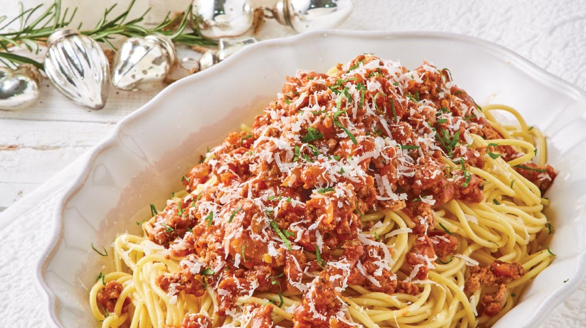

Ingredientes
Despues agregamos la salsa de tomate, el orégano y la pimienta negra dejando que todo se cocine durante 15 minutos, pasados este tiempo, agregamos el vino tinto y dejamos reposar.
En una olla caliente, ponemos la pasta a cocer durante 7 minutos, una vez pasados los 7 minutos, metemos la pasta en la sartén de la salsa, con un vaso de agua de la cocción de la pasta para que se integre la salsa.
Dejamos que se cocine drante 2 minutos y ya lo tendriamos listo para emplatar y ponerle un poco de oregano y sal al gusto.
